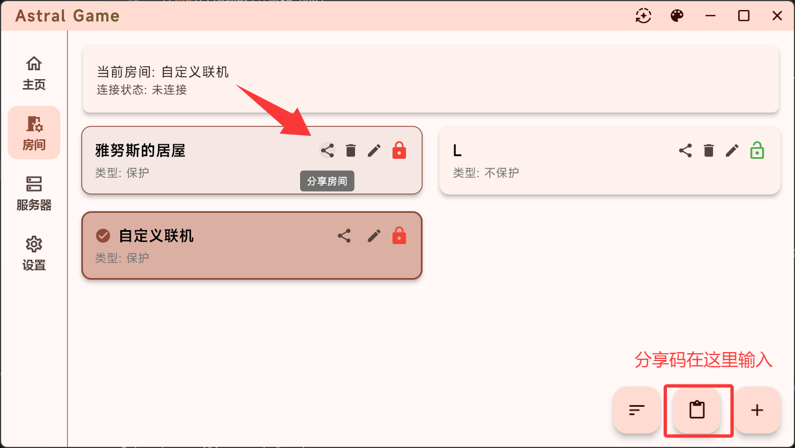

从 Hamachi 到 Astral：虚拟局域网工具这十五年的进化逻辑
从 Hamachi 的笨重时代到 Astral 的轻量跨平台，虚拟局域网联机工具的迭代节奏里藏着一条清晰的主线——让联机这件事越来越像"本来就该这么简单"。
现状：现在这版 Astral 长什么样
我第一次打开 Astral 的时候愣了几秒——不是因为它有什么惊艳的新功能，而是因为它什么都没有。没有广告横幅，没有强制登录弹窗，没有一堆让人填的配置项。底部三栏：服务器、房间、我的。点进服务器页，公共列表一拉就是十几台，勾上 TCP 和 UDP，启用，等三秒，状态变绿。就完了。

这就是 2020 年代的虚拟局域网工具该有的样子：你连想都不用想，它就帮你把虚拟网卡建好、把服务器挑好、把路由配好。连接成功之后，游戏里刷一下局域网列表，朋友就在那儿。没有中间步骤，没有"请先阅读以下免责声明"。
但这个"什么都没有"的体验，其实是 Astral 团队用了好几个版本才挤出来的。早期的 Astral 不是这样的。
来路：它从哪起步
虚拟局域网这个赛道不是 Astral 发明的。2009 年 Hamachi 就已经在做同样的事——通过中心化服务器帮两端打洞，把各自的局域网拼成一个。那个时代 Hamachi 是王者，也是笑话：免费版限制节点数、不支持跨平台、连接动不动就断一次，排障要翻三个论坛帖子。之后 ZeroTier、Tailscale 接力上来，把打洞这件事做得更稳、更快。
Astral 是这个赛道里比较晚的入场者，去astral官网看一眼功能列表就能确认这个判断。样本文档里没有提它的早期版本，我翻了一圈也没找到 changelog 归档，但从它现在的界面和功能组合来推，它起步的时候应该已经踩过了前辈们踩过的坑——或者说，它根本没打算从头造轮子。
它选了一条和 Tailscale、ZeroTier 不太一样的路线：不做通用组网，只做游戏联机。这个定位决定了它后面所有版本的取舍——把那些工程师觉得"酷"但玩家用不上的功能全砍了，只留联机链路最核心的三件事：服务器连接、房间管理、虚拟网卡。
这个决策看起来简单，但执行起来磨了好几个版本。我记得早期 Astral 连"一键启用公共服务器"这个按钮都没有，用户得自己填服务器地址、自己勾协议、自己试 TCP 还是 UDP。后来某个版本才把"公共列表+一键启用"做了出来，一下就把新用户的上手时间从五分钟砍到了三十秒。
房间管理这条线也值得说道。Astral 的房间是它区别于前辈的另一个关键设计——Hamachi 和 ZeroTier 里是没有"房间"这个概念的，你要么在同一个网络里，要么不在。Astral 把"临时联机局"这件事产品化了：创建房间、设密码、加保护（分享码才进得去），然后把房间号甩给朋友就行。保护房这个功能我印象特别深，早期版本里它只是个开关，后来才演化出"房间号不可见"这一层，等于是给小圈子联机加了一道真正的门。

跨平台是 Astral 迭代的另一个主轴。样本文档里我能看到 Windows 版的完整指南——下载页上 exe 安装包和 zip 便携版两种形态都有，防火墙放行规则、虚拟网卡排查也写得很细——这些内容说明 Windows 端是 Astral 最早也最成熟的平台。而它的分类是"安卓版"，移动端显然是后来才补上的。跨平台这件事在虚拟局域网工具里并不容易，因为每个平台的网络栈权限模型完全不同：Windows 需要管理员权限来创建 TAP 虚拟网卡，Android 需要 VPN Service 权限，iOS 的限制又更多。Astral 能把这些端统一到同一套交互逻辑里，背后应该花了不少版本在调试各平台的底层适配。
规律：从迭代节奏看团队的优先级
把这些碎片拼起来，Astral 的迭代规律就很清晰了——他们一直在死磕新用户的上手体验，对老用户的高级需求始终不感冒。
证据一：公共服务器列表。这是 Astral 最核心的功能之一，也是它和前辈最大的分水岭。Hamachi 里用户得自己找朋友开的服务器、自己填地址；ZeroTier 和 Tailscale 更极端，你得自己建一个网络、把每个人的设备 ID 加进去。Astral 直接给了一个公共列表，一选就用。这个功能看起来"理所当然"，但它背后的运营成本并不低——服务器要持续维护、列表要定期清理、坏节点要及时换掉。Astral 团队愿意在这件事上投入资源，说明他们的优先级不是"做一个纯技术工具"，而是"让普通人第一次打开就能用"。
证据二：防火墙排障指南。Windows 版的文档里专门有一大节讲防火墙怎么拦 Astral、怎么临时关掉测试、怎么加放行规则。能把这些写这么细，说明团队反复收到过"我连不上"的反馈，而且这些反馈里很大一部分是新用户——老用户早就知道该关防火墙或者加规则了。他们没把这些排障信息藏在 FAQ 里，而是直接放在了主文档的显眼位置，这是另一种优先级信号。
那什么是"一直不管"的？自定义服务器节点。Astral 允许用户添加自己的服务器，但入口藏得很深，文档里也只是提了一句"可以添加私有服务器"，没有展开怎么配、怎么维护、怎么选节点。对一个做虚拟局域网的工具来说，这其实是个挺核心的能力——想自己掌控链路的高级用户肯定会问"我能不能用自己的服务器"。但 Astral 团队显然觉得这件事不在当前阶段的优先级里，或者说他们有意把 Astral 定位成"用就完了，别管底层"的产品。
另一个"一直不管"的：多房间并行。我翻了中文文档确认，文档里明确说"一次只需要启用一台服务器""不需要同时开多台"，换服务器会断开原来的连接。这在一些场景下会不方便——比如你同时在 MC 和泰拉瑞亚里都有朋友在等——但 Astral 就是不做。为什么？因为做了之后交互复杂度会翻倍，而大部分用户根本不需要。
这些取舍加起来，Astral 的产品画像就出来了：一个不取悦任何人、只服务"第一次打开就能联机"这个核心场景的工具。
预判：照这个路线，下一步大概率的走向
说预判前先声明：这是从迭代规律推的，不是官方路线图。
第一个大概率的方向：移动端的完善。Astral 有安卓版但我没在样本文档里看到移动端的详细使用指南，说明移动端可能还在快速迭代阶段。跨平台体验统一是他们一直在做的事，Windows 端已经很成熟了，下一个重心大概率是把安卓端的体验拉齐——虚拟网卡的创建权限、房间创建和加入的流程、和桌面端的互通，这些都还有打磨空间。
第二个方向：公共服务器的分层。现在的公共列表是扁平的，十几台服务器一拉到底。如果用户量起来了，这个列表一定会膨胀，到时候需要按区域、按延迟、按游戏类型做筛选。但 Astral 团队对"把底层隐藏起来"这件事有执念，所以我猜他们不会做复杂的筛选器，而是会让服务器列表自动排序——延迟最低的排最上面、负载最轻的标个小绿点，用户还是"选第一个就行"。
第三个方向：游戏特定优化的试探。样本文档里列了一堆"支持局域网的游戏"，但 Astral 本身并没有对任何一款游戏做专门适配。不过如果团队收到了足够多的某款游戏的反馈——比如 MC 玩家特别多、Stardew Valley 的联机特别受欢迎——会不会加一个"进入房间后自动检测到游戏并推荐设置"的小功能？这个方向和他们"让联机更简单"的核心主线是吻合的，但具体做不做要看数据说话。
有一件事我觉得他们大概率不会做：商业化。Hamachi 免费版限制节点数、ZeroTier 免费版限制设备数、Tailscale 做团队版收费。Astral 到现在为止没有收费端口，也没有内购入口。这可能是因为它的目标用户量还没到需要考虑变现的时候，也可能是团队的定位里根本就没打算靠这个赚钱。如果未来 Astral 出现了 Pro 版、出现了高级功能墙、出现了广告——那一定是团队优先级发生了质变，不是简单的版本迭代。
回头看这十五年，虚拟局域网工具的进化线其实很简单：从"工程师给工程师做的工具"，到"产品经理给玩家做的服务"。Hamachi 属于前者，你得懂点网络知识才能用好它；Astral 属于后者，你连虚拟网卡这个概念都不需要知道。这条线还在往下走，Astral 能走到多远，取决于他们能不能在"简单"这条路上一直克制。如果想自己翻 Astral 的完整资料，三个仓库里都有现成的——GitHub 上的版本最全，Gitee 和 GitCode 适合国内网络更稳的时候查。